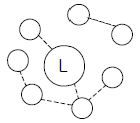
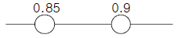
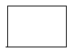
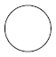
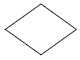
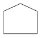

건설안전산업기사 (2006-09-10 기출문제)
1과목: 산업안전관리론
1. 인간의 실수 및 과오의 요인에 해당되지 않는 것은?
- 관리 부적당
- 환경조건 부적당
- 주의 부족
- 능력 부족
(정답률: 42%)

2. 사고의 직접적인 원인중의 하나인 불안전한 행동으로 볼수 없는 것은?
- 부적절한 태도
- 전문지식의 결여
- 신체적 부적합성
- 결함 있는 장비
(정답률: 68%)
3. 다음은 리더와 부하와의 관계를 나타낸 다음 그림이다. 해당되는 리더의 유형은?

- 민주형
- 자유방임형
- 권위형
- 권력형
(정답률: 54%)
4. 도수율 20.8인 사업장에서 한 작업자가 평생작업을 한다면 약 몇 건의 재해가 발생하겠는가? (단, 한 작업자의 평생근로연수는 40년으로 계산할 것)
- 1건
- 2건
- 3건
- 4건
(정답률: 44%)
5. 다음 중 안전표지를 알맞게 나타낸 것은?
- 부식성 물질저장 - 경고표지
- 금연 - 지시표지.
- 화기엄금 - 경고표지
- 안전모착용 - 안내표지
(정답률: 55%)
6. 우리나라에서 한해에 발생한 산업재해자 수는 81,911명이며, 같은 해 총 종사 근로자 수가 10,571,279명이라 하면, 재해율은 얼마인가?
- 0.08%
- 0.77%
- 7.75%
- 77.5%
(정답률: 60%)
7. 알고 있으나 그대로 하지 않는 사람에게 필요한 안전 교육은?
- 태도교육
- 기능교육
- 지식교육
- 실습교육
(정답률: 82%)
8. 연평균 근로자수가 1,000명인 사업장에서 연간 6건의 재해가 발생하였다면, 이때의 빈도율은? (단, 일일 근로시간수는 4시간, 연평균 근로일수는 150일이다.)
- 1
- 10
- 100
- 1,000
(정답률: 49%)
9. 정책수립, 조직, 통제 및 운영에 관한 사항을 교육내용으로 하고 강의법과 토의법이 가미되어 매주 4일, 4시간씩 8주(128시간)간 실시하는 교육방법은?
- TWI(Training Within Industry)
- ATT(American Telephone & Telegram Co)
- MTP(Management Training Program)
- ATP(Administration Training Program)
(정답률: 56%)
10. 생체리듬상 위험일에 대한 설명으로 옳은 것은?
- 육체, 지성, 감성 리듬이 최고조일 때이다.
- 육체, 지성, 감성 리듬이 (-)리듬에서 (+)리듬으로, 또는 (+)리듬에서 (-)리듬으로 변화하는 때이다.
- 육체, 지성, 감성 리듬이 최저점일 때이다.
- 감성리듬이 최저점일 때이다.
(정답률: 32%)
11. 산업안전보건법에 따라 안전인증을 받은 기계⋅기구에 표시하여야 하는 표시방법으로 틀린 것은?
- 표시는 대상 기계ㆍ기구 등이나 이를 담은 용기 또는 포장지의 적당한 곳에 붙이거나 인쇄하거나 새기는 등의 방법으로 해야 한다.
- 테두리와 문자는 흰색, 그 밖의 부분은 파란색
- 표시를 하는 경우에 인체에 상해를 입힐 우려가 있는 재질이나 표면이 거친 재질을 사용해서는 안 된다.
- 표시의 크기는 대상기계ㆍ기구 등의 크기에 따라 조정할 수 있다.
(정답률: 67%)
12. 사업장내의 물적, 인적 재해의 잠재 위험성을 사전에 발견 하여 그 예방대책을 세우기 위한 안전관리 행위는?
- 안전장치
- 안전진단
- 안전관리 조직
- 페일 세이프(fail safe)
(정답률: 57%)
13. 토의식 교육방법 중 몇 사람의 전문가에 의하여 과제에 관한 견해가 발표된 뒤 참가자로 하여금 의견이나 질문을 하게 하여 토의하는 방식은 다음 중 어느 것인가?
- 패널 디스커션(panel discussion)
- 심포지엄(symposium)
- 포럼(forum)
- 버즈세션(buzz session)
(정답률: 50%)
14. 다음 중 하인리히의 사고예방대책의 5단계에 속하지 않는 것은?
- 안전조직
- 위험소재의 발견
- 사정방법의 선정
- 사고관련자 조치
(정답률: 62%)
15. 다음 중 작업표준의 구비조건으로 틀린 것은?
- 이상 발생시의 조치기준에 대해 정해둘 것
- 생산성과 품질의 특성에 적합할 것
- 작업의 실정에 적합할 것
- 타 규정과의 위배 여부와는 무관할 것
(정답률: 66%)
16. J.H. Harvey가 주장한 사고예방의 시정책 3E(Three E'sof safety)에 해당하지 않는 것은?
- 교육(Education)
- 기술(Engineering)
- 환경(Environment)
- 관리(Enforcement)
(정답률: 44%)
17. 다음 중 직계식(Line)조직에 대한 설명으로 틀린 것은?
- 조직에 탄력성이 없다.
- 각 부문간의 업무상 혼란을 야기할 우려가 있다.
- 각 부문간의 유기적인 조정이 곤란하다.
- 책임과 권한을 명백히 이해할 수 없다.
(정답률: 32%)
18. 피로의 분류 내용에 대한 설명으로 옳은 것은?
- 정신피로 : 정신적 긴장에 의한 중추신경계피로
- 급성피로 : 근육 등에서 일어나는 신체피로
- 육체피로 : 오랜 기간 축적된 피로
- 만성피로 : 정상피로, 건강피로 라고도 하며 보통 휴식에 의해 회복되는 피로
(정답률: 40%)
19. 다음 중 관료주의에 대한 설명으로 틀린 것은?
- 의사결정에는 작업자의 참여가 필수적이다.
- 인간을 조직내의 한구성원으로만 취급한다.
- 개인의 성장이나 자아실현의 기회가 주어지지 않는다.
- 사회적 여건이나 기술의 변화에 신속하게 대응하기 어렵다.
(정답률: 60%)
20. 방진마스크의 선정기준으로 옳은 것은?
- 유효공간(사용적)이 클 것
- 분진포집(여과) 효율이 좋을 것
- 사방시야 50° 이상일 것
- 흡기 저항은 낮고, 배기 저항은 높을 것
(정답률: 55%)
2과목: 인간공학 및 시스템안전공학
21. 실내 표면 중에서 반사율이 가장 낮아야 하는 곳은?
- 벽
- 천장
- 바닥
- 가구
(정답률: 72%)
22. 다음 시스템의 신뢰도는? (단, 두 부품의 고장은 독립이라고 가정한다.)

- 0.765
- 0.825
- 0.875
- 0.992
(정답률: 60%)
23. 다음 중 진전(손떨림, tremor)이 가장 적은 손의 높이는?
- 입높이
- 심장높이
- 배꼽높이
- 무릎높이
(정답률: 41%)
24. 기계와 인간 사이에 두는 Lock system은 무엇인가?
- Translock system
- Intralock system
- Timelock system
- Interlock system
(정답률: 35%)
25. 화학설비의 위험을 예방하기 위한 안전성 평가 중 3단계에 해당하는 것은?
- 정성적 평가
- 정량적 평가
- 안전대책
- 재평가
(정답률: 40%)
26. 작업영역을 설계할 때 조정가능성의 대상에 해당하지 않는 것은?
- 작업대의 조정 가능성
- 작업공구의 조정 가능성
- 작업대상물의 조정가능성
- 작업대와 관련된 작업자 자세의 조정 가능성
(정답률: 36%)
27. 평균 고장시간이 10,000시간인 지수분포를 따르는 요소 10개가 직렬계로 구성되어 있는 경우 계의 기대 수명은?
- 1,000 시간
- 5,000 시간
- 10,000 시간
- 100,000 시간
(정답률: 25%)
28. 기계가 인간을 능가하는 경우가 아닌 경우는?
- 물리적인 양을 계수하거나 측정한다.
- 완전히 새로운 해결책을 찾아낸다.
- 암호화된 정보를 신속하게 대량으로 보관한다.
- 반복적인 작업을 규율 있게 발휘한다.
(정답률: 67%)
29. 인간의 반응에는 얼마 정도의 저항기간(refractory period)이 존재한다고 보는가?
- 0.1초
- 0.3초
- 0.5초
- 1.0초
(정답률: 34%)
30. 다음 중 정확한 수치를 읽는데 있어서 최소의 시간과 최소의 판독오차를 가지는 표시장치는?
- 지침이동형(moving pointer type)
- 계수형(counter type)
- 프린터형(printer type)
- 눈금이동형(moving scale type)
(정답률: 55%)
31. 다음 중 판단과정의 착오 원인이 아닌 것은?
- 자신 과신
- 능력 부족
- 정보 부족
- 감각차단현상
(정답률: 25%)
32. 건구온도 38°C, 습구온도 32°C 일 때의 Oxford지수는 몇 °C 인가?
- 30.2°C
- 32.9°C
- 35.0°C
- 37.1°C
(정답률: 50%)
33. 연속제어 조종장치에서 정확도보다 속도가 중요하다면 통제표시비 (C/D비)의 비율은 어떻게 하여야 하는가?
- C/D비율을 1로 조절하여야 한다.
- C/D비율을 1보다 낮게 조절하여야 한다.
- C/D비율을 1보다 높게 조절하여야 한다.
- C/D비율을 조절할 필요가 없다.
(정답률: 46%)
34. 다음 중 정보의 청각적 제시방법이 적절한 경우는?
- 수신자가 여러 곳으로 움직여야 할 때
- 정보가 복잡하고 길 때
- 정보가 공간적인 위치를 다룰 때
- 즉각적인 행동을 요구하지 않을 때
(정답률: 48%)
35. 다음 중 연속조절 통제기기가 아닌 것은?
- 토글(Toggle)스위치
- 노브(Knob)
- 페달(Pedal)
- 핸들(Handle)
(정답률: 50%)
36. 시스템 안전성 평가 기법에 대한 설명으로 틀린 것은?
- 가능성을 정량적으로 다룰 수 있다.
- 시각적 표현에 의해 정보전달이 용이하다.
- 원인, 결과 및 모든 사상들의 관계가 명확해진다.
- 연역적 추리를 통해 결함사상을 빠짐없이 도출하나, 귀납적 추리로는 불가능하다.
(정답률: 55%)
37. FTA도표에서 사용하는 논리기호 중에서 기본사상을 나타내고, 때로는 점선으로 사람의 실수를 나타내는 기호는?




(정답률: 50%)
38. 시스템 신뢰도를 증가시킬 수 있는 방법이 아닌 것은?
- 페일 세이프(fail safe)설계
- 풀 프루프(fool proof)설계
- 중복 설계
- lock system 설계
(정답률: 35%)
39. 부품 배치의 4원칙으로 틀린 것은?
- 중요성의 원칙
- 사용빈도의 원칙
- 기능별 배치의 원칙
- 사용방법의 원칙
(정답률: 59%)
40. 인간 에러(human error)를 일으킬 수 있는 정신적 요소가 아닌 것은?
- 방심과 공상
- 지식의 부족
- 판단력의 부족
- 생산성의 강조
(정답률: 54%)
3과목: 건설시공학
41. 흙을 이김에 의해서 약해지는 정도를 나타내는 흙의 성질은?
- 간극비
- 함수비
- 예민비
- 전단강도
(정답률: 45%)
42. 기존 건물에 근접하여 구조물을 구축할 때 기존건물의 균열 및 파괴를 방지할 목적으로 지하에 실시하는 보강 공법은?
- 베노토 공법
- BH(Boring Hole)
- 심초공법
- 언더피닝(Under Pinning)
(정답률: 70%)
43. 철골공사에서 원척도를 그릴 때 리벳을 배치하는 위치로 가장 적당한 것은?
- 부재의 중심선
- 게이지라인
- 부재의 응력중심선
- 피치라인
(정답률: 35%)
44. 건설공사 완료 후 불량시공부분에 재시공을 보장하기 위하여 은행 등에 예치하는 돈의 명칭은?
- 입찰보증금
- 계약보증금
- 지체보증금
- 하자보증금
(정답률: 84%)
45. 흙막이벽의 계측관리 중 지보공 버팀대에 작용하는 축력 을 측정하는 장치의 이름은?
- 트랜싯
- 로드셀
- 크랙게이지
- 레벨
(정답률: 20%)
46. 말뚝공사에서 프리보링(Pre boring)공법을 잘 나타낸것은?
- 어스오거로 지반천공 - 말뚝압입 - 모르타르 주입
- 제트파이프 삽입 - 고압수 분출 - 말뚝압입 또는 타격
- 말뚝중공부 오거삽입 - 선단부 굴착 - 말뚝침하 매립
- 말뚝설치 - 해머낙하로 타격 - 말뚝 지중관입
(정답률: 53%)
47. 내⋅외관을 소정의 깊이까지 박은 후에 내관을 빼낸 후, 외관에 콘크리트를 부어 넣어 지중에 콘크리트 말뚝을 형성시키는 파일(Pile)의 명칭은?
- 심플렉스 파일(Simplex Pile)
- 콤프레솔 파일(Compressol Pile)
- 페데스탈 파일(Pedestal Pile)
- 레이몬드 파일(Raymond Pile)
(정답률: 40%)
48. 공정계획 및 관리에 있어 작업의 집약화와 관계가 가장적은 것은?
- 부분공사로서 이미 자료화 되어 있는 작업군
- 투입되는 자원의 종류가 다른 작업군
- 관리외의 작업군
- 현시점에서 관리상의 중요도가 적은 작업군
(정답률: 37%)
49. 토공장비인 파워쇼벨(power shovel)의 설명으로 가장 적합한 것은?
- 지반보다 높은 곳의 굴착에 적합하며, 굴착은 디퍼(dipper)가 행한다.
- 가장 일반적으로 사용되는 것으로 흙의 표면을 밀면서 깎아 단거리 운반을 하거나 정지하는 기계이다.
- 파헤쳐진 흙을 담는데 사용되는 기계로서 쇼벨, 버킷을 장착한 트랙터 또는 크롤러 유형이 있다.
- 풀 쇼벨(pull shovel), 트렌치 호(trench hoe), 백호(back ho)라고도하며, 주로 협소한 구역에서 지반보다 낮은 곳을 굴착하는데 사용한다.
(정답률: 48%)
50. 철골공사에서 용접결함에 관한 사항이 아닌 것은?
- 오버랩
- 언더컷
- 블로홀
- 스캘럽
(정답률: 66%)
51. 철골기둥과 주각부 접합에 사용되는 철골 부재가 아닌 것은?
- 베이스플레이트(Base Plate)
- 필러(Filler)
- 사이드앵글(Side angle)
- 앵커볼트(Anchor bolt)
(정답률: 41%)
52. 물 ㆍ 시멘트비의 결정요인에 속하지 않는 것은?
- 내화성
- 내구성
- 수밀성
- 압축강도
(정답률: 67%)
53. 공사현장의 공정표 내용 중 가장 기본이 되는 것은?
- 재료반입량
- 노무출력량
- 공사량
- 기후 및 기온
(정답률: 79%)
54. 공사현장에 반입되는 콘크리트의 검사에서 슬럼프 시험을 실시하는 주된 목적은?
- 반죽질기를 평가하기 위하여
- 콘크리트의 압축강도를 측정하기 위하여
- 콘크리트의 내구성을 측정하기 위하여
- 콘크리트의 경제성을 측정하기 위하여
(정답률: 58%)
55. 콘크리트 강도에 가장 큰 영향을 미치는 배합요소는 어느 것인가?
- 모래와 자갈의 비율
- 물과 시멘트의 비율
- 시멘트와 모래의 비율
- 시멘트와 자갈의 비율
(정답률: 65%)
56. 바닥판, 보 밑 거푸집 설계에서 고려하는 하중에 속하지 않는 것은?
- 아직 굳지 않은 콘크리트 중량
- 작업하중
- 충격하중
- 측압
(정답률: 66%)
57. 전체공사의 진척이 원활하며 공사의 시공 및 책임한계가 명확하여 공사관리가 쉽고 하도급의 선택이 용이한 도급 제도는 어느 것인가?
- 분할도급제도
- 일식도급제도
- 단가도급제도
- 공사별도급제도
(정답률: 60%)
58. 보통 콘크리트 공사에서 콘크리트에 포함된 염화물량은 염소이온량으로서 얼마 이하로 하는가?
- 0.2kg/m3
- 0.3kg/m3
- 0.4kg/m3
- 0.6kg/m3
(정답률: 38%)
59. 다음 중 지반개량공법의 종류에 속하지 않는 것은?
- 탈수다짐법
- 치환법
- 표준관입시험법
- 약액주입법
(정답률: 41%)
60. 콘크리트 타설 작업의 기본원칙 중 맞는 것은?
- 타설구획 내의 가까운 곳부터 타설한다.
- 타설구획 내의 콘크리트는 휴식시간을 가지면서 타설한다.
- 낙하높이는 크게 한다.
- 타설위치에 가까운 곳까지 펌프, 버킷 등으로 운반하여 타설한다.
(정답률: 67%)
4과목: 건설재료학
61. 다음 중 ALC 제품의 가장 큰 단점은 무엇인가?
- 방음, 단열효과가 떨어진다.
- 중량이 크다.
- 흡수성이 크다.
- 휨강도에 비해 압축강도가 상당히 약하다.
(정답률: 47%)
62. 석재의 일반적인 특징에 대한 설명 중 틀린 것은?
- 내구성, 내화학성, 내마모성이 우수하다.
- 외관이 장중하고 석질이 치밀한 것을 갈면 미려한 광택이 난다.
- 압축강도에 비해 인장강도가 작다.
- 가공성이 좋으며 장대재를 얻기 용이하다.
(정답률: 30%)
63. 유기천연섬유 또는 석면 섬유를 결합한 원지에 연질의 스트레이트 아스팔트를 침투시킨 것으로 아스팔트방수 중간층재로 사용되는 것은?
- 아스팔트 컴파운드
- 아스팔트 프라이머
- 아스팔트 루핑
- 아스팔트 펠트
(정답률: 41%)
64. 유리의 일반적 성질에 관한 설명 중 틀린 것은?
- 창유리의 강도는 휨강도를 말한다.
- 유리는 전기의 불량도체이지만 표면의 습도가 크면 클수록 그 저항이 낮아진다.
- 염산, 황산, 질산 등에는 침식되지 않지만 약한 산에는 서서히 침식된다.
- 자외선, 라듐선, X-선 등은 유리를 침식해서 분해, 착색, 반점 등을 생기게 한다.
(정답률: 43%)
65. 다음 중 시멘트의 분말도 시험방법이 아닌 것은?
- 체분석법
- 로스앤젤레스방법
- 피크노메타법
- 브레인법
(정답률: 44%)
66. 혼화재료 중 플라이애시가 콘크리트에 미치는 작용에 대한 설명으로 옳지 않은 것은?
- 콘크리트의 워커빌리티를 개선시키고 펌핑성을 향상 시킨다.
- 콘크리트의 수밀성을 향상시킨다.
- 해수 중의 황산염에 대한 저항성을 높인다.
- 콘크리트 수화 초기시의 발열량을 증가시킨다.
(정답률: 49%)
67. 금속의 부식 방지대책으로 옳지 않은 것은?
- 가능한 한 두 종의 서로 다른 금속은 틈이 생기지 않도록 밀착시켜서 사용한다.
- 균질한 것을 선택하고 사용할 때 큰 변형을 주지 않도록 주의한다.
- 표면을 평활, 청결하게 하고 가능한 한 건조상태를 유지하며, 부분적인 녹은 빨리 제거한다.
- 큰 변형을 준 것은 가능한 한 풀림하여 사용한다.
(정답률: 45%)
68. 굳지 않은 콘크리트의 성질을 표시하는 용어로, 주로 수량에 의해서 변화하는 유동성의 정도를 나타내는 것은?
- 컨시스턴시(consistency)
- 스테빌리티(stability)
- 레이턴스(laitance)
- 크리프(creep)
(정답률: 52%)
69. 다음의 비철금속에 관한 설명 중 옳지 않은 것은?
- 동은 연성이고 가공성이 풍부하여 판재, 선, 봉 등으로 만들기가 용이하다.
- 알루미늄은 상온에서 판, 선으로 압연가공하면 경도와 인장강도는 감소하고 연신율은 증가한다.
- 납은 비중이 아주 크고 연질이며 전⋅연성이 크고 융점이 낮다.
- 주석은 은백색의 연한 금속으로 주조성, 단조성이 좋아 각종 금속과 합금이 유리하다.
(정답률: 53%)
70. 창호철물 중 열려진 여닫이문이 저절로 닫아지게 하는 것은?
- 도어스톱(door stop)
- 도어캐치(door catch)
- 도어체크(door check)
- 도어홀더(door holder)
(정답률: 35%)
71. 고온소성의 무수석고를 특별한 화학처리를 한 것으로 경화 후 아주 단단하며, 킨스시멘트라고도 불리는 것은?
- 돌로마이터 플라스터
- 스타코
- 순석고 플라스터
- 경석고 플라스터
(정답률: 48%)
72. 일명 부석(斧石)이라고 하며 화산에서 분출된 마그마가 급냉각하여 응고된 다공질로 경량골재나 내화재로 사용되는 석재는?
- 화산암
- 석회암
- 화강암
- 대리석
(정답률: 32%)
73. 점토의 종류별 특성과 용도에 대한 설명으로 틀린 것은?
- 자토는 백색으로 가소성이 부족하며 도자기 원료로 쓰 인다.
- 석기점토는 유색의 견고하고 치밀한 구조로 내화도가 높으며 유색도기의 원료로 쓰인다.
- 석회질 점토는 용해되기가 어려우며 경질도기의 원료로 쓰인다.
- 내화점토는 회백색 또는 담색이며 내화벽돌, 유약원료로 쓰인다.
(정답률: 49%)
74. 절대건조비중(r)이 0.69인 목재의 공극률은?
- 31.0%
- 44.8%
- 55.2%
- 69.0%
(정답률: 46%)
75. 플라스틱재료의 일반적인 성질에 대한 설명 중 옳지 않은 것은?
- 흡수성이 적고 거의 투수성이 없다.
- 전성, 연성이 크고 피막이 강하다.
- 강성이 크며 온도변화에 대하여 변형이 적다.
- 착색이 비교적 자유롭다.
(정답률: 56%)
76. 다음의 각종 합성수지에 대한 설명 중 옳은 것은?
- 요소수지는 아미노계에 속하는 열가소성 수지로 내수성이 크고 착색이 자유롭다.
- 아크릴수지는 평판 성형되어 글라스 대신 이용되는 경우가 많다.
- 실리콘 수지는 건축용으로는 글라스섬유로 강화된 평판 또는 판상제품으로 주로 사용되고 있다.
- 염화비닐수지는 내열성 ㆍ내한성이 우수한 열경화성 수지로 탄성을 가지며 내화학성이 아주 우수하다.
(정답률: 33%)
77. 목재에 함유된 수분에 관한 설명으로 틀린 것은?
- 섬유포화점 이상의 함수상태에서는 함수율의 증감에도 불구하고 신축을 일으키지 않는다.
- 목재가 통상 대기의 온도, 습도와 평형된 수분을 함유한 상태를 기건상태라 한다.
- 목재의 일반적인 섬유포화점은 10~15%이며, 이 점을 경계로 목재의 성질이 크게 변화한다.
- 목재 내부가 모두 수분으로 완전히 포화된 상태를 포수상태라 하며 이때의 함수율을 최대함수율이라고 한다.
(정답률: 31%)
78. 콘크리트용 골재에 관한 설명으로 부적당한 것은?
- 골재의 조립률이란 일정 용기내에 골재가 차지하는 실제 용적의 비율이다.
- 일반적으로 비중이 큰 것은 공극, 흡수율이 적으므로 동결에 의한 손실도 적고 내구성이 크다.
- 실적율이 클수록 골재의 입도분포가 적당하여 시멘트 페이스트량이 적게 든다.
- 알칼리 골재반응은 골재 중의 실리카질광물이 시멘트 중의 알칼리성분과 화학적으로 반응하는 것이다.
(정답률: 23%)
79. 목재의 일반적인 성질에 대한 설명 중 옳지 않은 것은?
- 석재나 금속에 비하여 가공하기가 쉽다.
- 건조한 것은 타기 쉽고 건조가 불충분한 것은 썩기 쉽다.
- 열전도율이 커서 보온재료로 사용이 곤란하다.
- 아름다운 색채와 무늬로 장식효과가 우수하다.
(정답률: 61%)
80. 회반죽에 대한 설명 중 틀린 것은?
- 경화건조에 의한 수축율이 크기 때문에 여물로서 균열을 분산, 경감시킨다.
- 해초풀을 넣는 것은 경화속도를 높이기 위한 것이다.
- 회반죽 바름은 일반적으로 연약하고 비내수성이다.
- 공기중의 탄산가스와 표면부터 서서히 반응하여 경화한다.
(정답률: 41%)
5과목: 건설안전기술
81. 철골작업을 중지 시켜야 하는 기준이 되는 강우량은 1시간 당 몇 mm 이상인가?
- 1mm
- 2mm
- 3mm
- 4mm
(정답률: 61%)
82. 비탈면붕괴를 방지하기 위한 방법으로 틀린 것은?
- 배토공
- 배수공
- 압성토공
- 절토 높이의 증가
(정답률: 54%)
83. 다음 중 리프트의 조립 ㆍ해체작업을 지휘하는 자가 취해야 할 조치라고 볼 수 없는 것은?
- 작업방법과 근로자의 배치 결정
- 리프트의 상 ㆍ하 운행 작동
- 기구 및 공구의 기능 점검
- 작업 중 보호구 착용 감시
(정답률: 45%)
84. 일반적으로 저수지나 댐의 사면이 가장 위험한 때는?
- 사면의 수위가 서서히 하강할 때
- 사면이 완전 건조 상태일 때
- 사면의 수위가 급격히 하강할 때
- 사면이 완전 포화 상태일 때
(정답률: 62%)
85. 항타기 ㆍ항발기 권상용 와이어로프의 사용금지 기준으로 틀린 것은?
- 이음매가 있는 것
- 심하게 변형 또는 부식된 것
- 지름의 감소가 공칭지름의 5%를 초과하는 것
- 와이어로프의 한 꼬임에서 소선의 수가 10% 이상 절단된 것
(정답률: 50%)
86. “현장의 고압선 충전전로에서 근접하여 비계작업을 하려고 한다. 해당 작업에 종사하는 근로자의 신체 등이 충전 전로에 접촉하거나 해당 충전전로에 대하여 머리 위로의 거리가 ( ① )cm 이내 이거나 신체 또는 발 아래로의 거리가 ( ② )cm 이내로 접근함으로 인하여 감전의 우려가 있는 때 에는 해당 충전전로에 절연용 방호구를 설치하여야 한다.” ( ) 안에 적합한 것은?
- ①30, ② 60
- ①60, ② 30
- ①60, ② 90
- ①90, ② 60
(정답률: 39%)
87. 산업안전보건관리비(안전관리비)의 항목으로 사용할 수 있는 것은?
- 비계 해체시 하부통제를 위한 신호자의 인건비
- 외부인 출입금지, 공사장 경계표시를 위한 가설울타리 설치비
- 가설 전기설비, 분전반, 전신주 이설비
- 교통 통제를 위한 교통정리, 신호수의 인건비
(정답률: 28%)
88. 다음 중 구조물 해체작업용 기계 ㆍ기구의 종류가 아닌 것은?
- 포크 리프트(Fork lift)
- 압쇄기
- 대형 브레이커
- 쐐기 타입기(Rock jack)
(정답률: 52%)
89. 비계(달비계, 달대비계 및 말비계 제외)의 높이가 2미터 이상인 작업장소에 적합한 작업발판의 폭은 얼마 이상이어야 하는가?
- 10cm
- 20cm
- 30cm
- 40cm
(정답률: 36%)
90. 연질의 점토지반 굴착시 흙막이 바깥에 있는 흙의 중량과 지표 위의 적재하중 등에 의해 저면 흙이 붕괴 되고 흙막이 바깥에 있는 흙이 안으로 밀려 불룩하게 되는 현상은?
- 히빙
- 보일링
- 파이핑
- 베인
(정답률: 40%)
91. 다음 중 유해 ㆍ위험방지 계획서 제출 대상 공사는?
- 지상높이가 25m인 건축물
- 최대지간길이가 45m인 교량건설공사
- 제방 높이가 50m인 다목적댐 건설공사
- 깊이가 8m인 굴착공사
(정답률: 50%)
92. 건설공사 현장에서 가설통로 설치기준으로 맞는 것은?
- 높이 3m인 가설통로의 경사가 15°이내일 때 손잡이를 설치하여야 한다.
- 수직갱에 가설된 통로의 길이가 10m를 초과하면 8m 이내에 계단참을 설치하여야 한다.
- 경사각이 15° 미만이면 일반적으로 미끄럼 방지 장치를 하지 않아도 된다.
- 높이가 7m 이상인 비계다리에는 6m 이내 마다 계단참을 설치하여야 한다.
(정답률: 42%)
93. 안전난간의 설치 기준에 대한 설명으로 옳지 않은 것은?
- 안전난간은 상부난간대, 중간난간대, 발끝막이판, 난간 기둥으로 구성된다.
- 상부난간대는 바닥면 등으로부터 90~120cm 이하에 설치하고, 중간난간대는 그 중간에 설치한다.
- 발끝막이판은 바닥면 등으로부터 10cm의 높이를 유지한다.
- 안전난간은 임의이 점에서 임의의 방향으로 움직이는 80kg 이상의 하중에 견딜 수 있는 튼튼한 구조로 한다.
(정답률: 52%)
94. 다음 중 터널식 굴착방법과 거리가 먼 것은?
- T.B.M
- NATM
- 쉴드
- 어스앵커(Earth Anchor)
(정답률: 32%)
95. 강관 비계기둥 간의 최대 허용 적재 하중으로 맞는 것은?
- 500kg
- 400kg
- 300kg
- 200kg
(정답률: 50%)
96. 비계를 조립, 해체하거나 또는 변경한 후 그 비계에서 작업 할 때 해당 작업 시작 전에 점검하여야 하는 사항으로 옳지 않은 것은?
- 최대 적재하중으로 재하시험을 한다.
- 발판 재료의 손상 여부 및 부착 또는 걸림 상태를 점검한다.
- 연결재료 및 연결철물의 손상 또는 부식 상태를 점검한다.
- 해당 비계의 연결부 또는 접속부의 풀림 상태를 확인한다.
(정답률: 53%)
97. 철근 콘크리트 공사에서 거푸집동바리의 해체시기를 결정하는 요인으로 가장 거리가 먼 것은?
- 시방서 상의 거푸집 존치기간의 경과
- 콘크리트 강도시험 결과
- 일정한 양생 기간의 경과
- 후속공정의 착수시기
(정답률: 45%)
98. 콘크리트 타설 시 거푸집의 측압에 영향을 미치는 인자에 대한 설명으로 맞는 것은?
- 슬럼프가 작을수록 측압이 크다.
- 단위 폭당 단면적이 클수록 측압이 크다.
- 타설속도가 느릴수록 측압이 크다.
- 콘크리트의 단위중량(밀도)이 작을수록 측압이 크다.
(정답률: 36%)
99. 발파공사 암질 변화 구간 및 이상암질 출현시 암질 판별 방법이 아닌 것은?
- R.Q.D
- R.M.R 분류
- 탄성파 속도
- 하중계(Load Cell)
(정답률: 59%)
100. 추락시 로프의 지지점에서 최하단까지의 거리 h를 구하면 얼마인가? (단, 로프 길이 150cm, 로프 신율 30%, 근로자 신장 170cm)
- 2.8m
- 3.0m
- 3.2m
- 3.4m
(정답률: 48%)